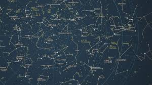

⭐ Constellations ⭐
The sky was our first storybook.
Popular Constellations
-
Orion
- One of the oldest recognized constellations, admired for over 2,000 years.
- In Greek mythology he is the great hunter whose tale explores strength, pride, and mortality.
-
Ursa Major (The Big Dipper)
- Recognized since prehistoric times by cultures across the globe.
- Represents Callisto in Greek mythology, while other traditions relied on it for navigation.
-
Cassiopeia
- Documented by Greek astronomers around the 2nd century AD.
- Depicts the queen punished for vanity, condemned to turn through the sky.
-
Leo
- Traces back to Babylonian astronomy more than 3,000 years ago.
- Embodies the Nemean Lion from Greek myth, symbolizing bravery and heroic strength.
-
Scorpius
- Known since ancient Mesopotamian times and featured in many sky stories.
- Myth says it is the scorpion sent to defeat Orion, explaining why they appear on opposite sides of the sky.
Constellations in the Northern Hemisphere

To learn more about the stories
Interactive Tableau
Before books, there were stars.
Home
Jump to Top